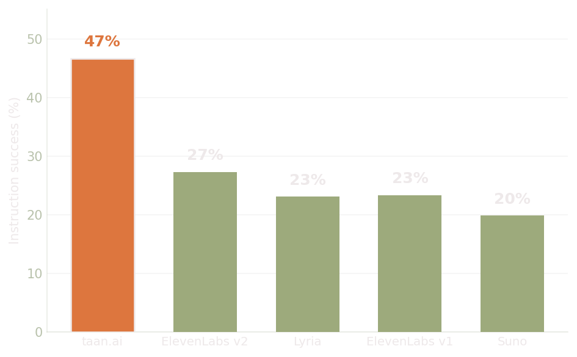
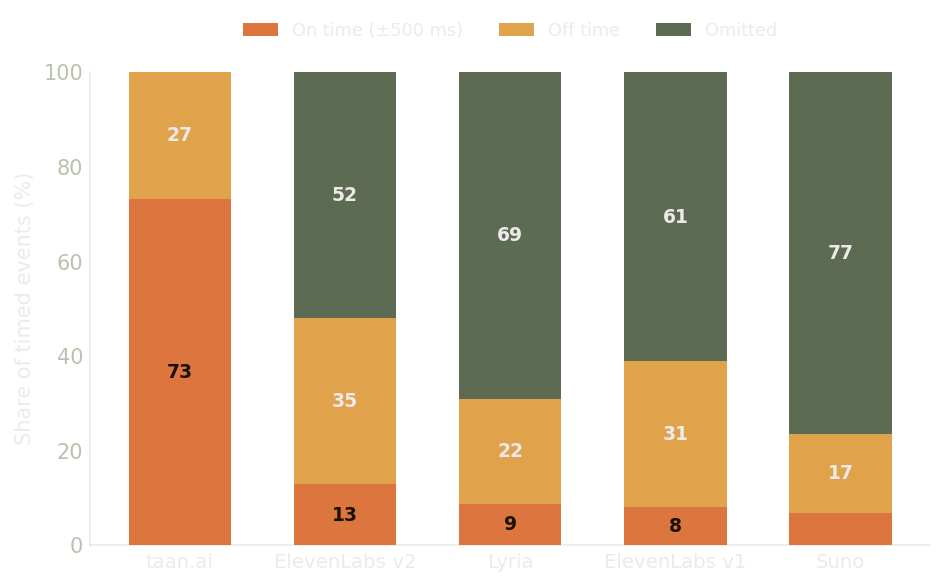
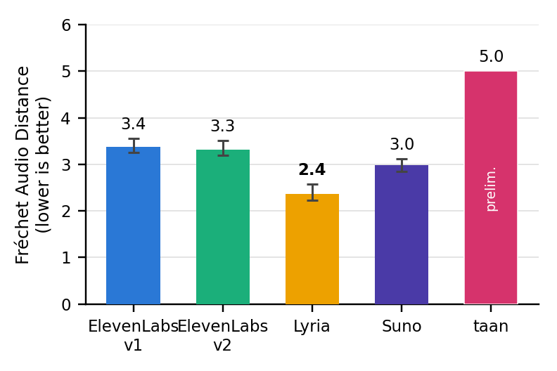
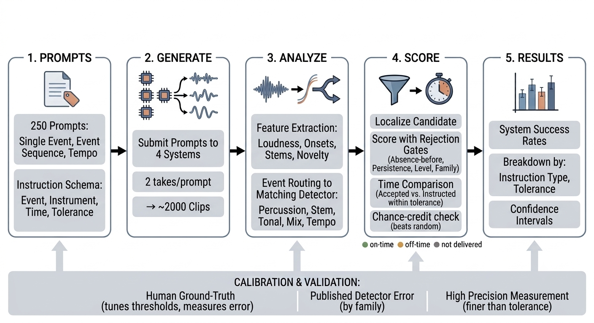

Music generators sound impressive, but for anything synced to picture the music has to hit its mark on time. No existing benchmark measures that. This is the first to test temporal controllability: whether a system places an instructed musical event within a fraction of a second of when you asked for it. We put four leading systems through it, and precise timing is largely missing. It is also the axis taan.ai is built to win.
Text-to-music systems produce polished audio in seconds, but applications that sync music to picture (film, ads, games, short-form video) need events to hit their mark within a few hundred milliseconds. "Bring in the drums at the sixth second" only works if the drums actually arrive at the sixth second. Existing evaluation measures fidelity and overall prompt match; none asks whether the music does the right thing at the right time.
Each prompt asks for a specific musical event at a specific moment. We score whether it lands within a tolerance of the requested timestamp, across three families of instruction:
Across four widely used systems, tempo instructions are followed most of the time, but timed events land within ±500 ms in only 2.5–14.6% of cases. Models place events near the requested moment, not at it. The plots below place taan.ai alongside them for contrast.
| System | Instruction success | 95% CI | Event ±500 ms | Tempo (type 3) |
|---|---|---|---|---|
| ElevenLabs v2 | 26.1% | 22.4–29.7 | 11.8% | 79.0% |
| Google Lyria | 22.8% | 19.3–26.2 | 7.9% | 85.6% |
| ElevenLabs v1 | 22.0% | 18.5–25.4 | 7.0% | 83.0% |
| Suno | 18.5% | 15.2–21.6 | 5.5% | 75.5% |
Instruction success = per-clip fraction of instructions delivered (timed events within ±500 ms; tempo within tolerance). Rank only where confidence intervals separate.


Controllability only counts if the music still sounds good. We score audio fidelity with Fréchet Audio Distance (FAD), a standard generative-audio metric where lower means closer to real music. Each clip is loudness-normalized to −14 LUFS, trimmed to 30 s, and turned into VGGish features; those are compared against a fixed real-music reference corpus (GTZAN), with 95% confidence intervals over clips. taan trails the commercial field on fidelity today; that is a deliberate early trade for timing precision none of them have, and quality is the fastest-moving part of the stack.

Every score comes from a deterministic signal-processing pipeline: prompts are turned into machine-checkable events, audio is generated, each event is routed to a purpose-built detector, and a candidate is credited only if it clears a cascade of rejection gates, so dense arrangements cannot score by luck. The pipeline's own localization error is measured against human labels and published, so model differences are never confused with measurement noise.
